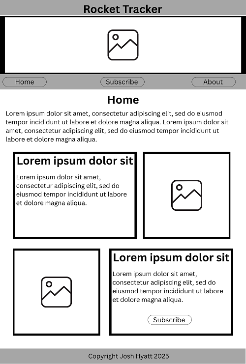

Site Name
To avoid clashing with a similar site, the website will be called Rocket Tracker.
Site Purpose
The purpose of the site will be to teach visitors about orbital launches and space travel, as well as to provide a platform for users to track upcoming launches and learn about the companies and technologies involved.
Scenarios
- What makes rocket science so difficult? Can't you just fly up?
- How can I get notified about upcoming launches?
- What on earth is everyone putting into space anyway?
Color Schema
:root {
--primary-color: #141e29; /* used for header/footer background */
--secondary-color: #c4c5c7; /* used for body background */
--accent1-color: #c76a18; /* used for buttons and highlights */
--accent2-color: #face3c; /* used for links and hover effects */
--text-color: #1a1a1a; /* used for body text (except on dark backgrounds like primary color) */
}
Typography
Headers will use the "Orbitron" font, which is a futuristic typeface suitable for space themes. Body text will use "Open Sans", a clean and readable font.
Wireframes
Home Page
Home Page (Mobile)